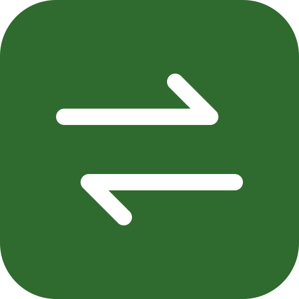

Controle de TransferênciasMáquinas · Fazendas · OficinaO app só funciona conectado, para garantir que cada registro chegue ao servidor.
Anote no papel e lance quando tiver sinal. Esta tela some sozinha quando a conexão voltar.
Aguarde a confirmação.